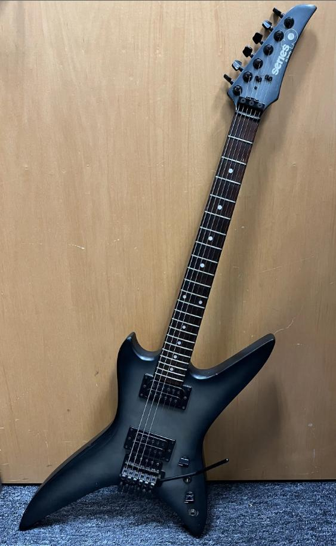

The Matrix: Reloaded
I decided to not skip anything in my rewatch of The Matrix, and am watching them in release order, so that meants I did wind up watching Reloaded last night.
I think this is the first time I've rewatched it since it came out. As previously mentioned, I had originally thought that the series was stronger without it, and that it someone ruined Revolutions. While still not my favorite movie, I didn't find it nearly as bad as I did way back when I originally watched it. There are a few scenes which probably should have never made it past the cutting room, but overall it was better than I remembered.
Because I am going in release order, The Animatrix is next.
The Matrix
Continuing on my binge of older movies, I just finished the first of The Matrix trilogy, and I am suprised at how well it holds up.
I remember when this one first came out. My wife an I watched a *lot* of movies back then. We had gone to a packed cinema on a Friday or Saturday evening and took her brother and parents with us. The showing was nearly sold out, and we wound up with crappy seats (way too close and way too off from the center of the screen) for a movie none of us had actually heard of. And then the lights went down and the movie started, and all the complaining about being too crowded and crappy seats suddenly stopped.
As I mentioned, the original held up extremely well. I did not like the second film in the series, and always felt like Revolutions would have been much better if Reloaded had never happened, so I don't know whether to skip Reloaded and go straight to The Animatrix or not.
Airheads
This one is a bit newer than The Blues Brothers, and I'm not a huge fan of Adam Sandler, but Airheads was another great music comedy that I just finished a rewatch of. Definitely going in my rotation for fairly regular rewatch.
Tags: movies, comedy, airheads
The Blues Brothers
Many times, when I watch a movie that I haven't seen in a long time, it triggers a flood of memories. Not so with this one, but I enjoyed every minute of the extended cut of The Blues Brothers. This is such an amazing movie, even 45-ish years after I first saw it, that I didn't even notice that is was 2 1/2 hours.
John Belushi was such an amazing actor who left us way too soon, but this movie is filled with amazing talent, from the comedic actors to the amazing musicians who lend their talent to the movie. There are also a ton of great cameos. Some of them are pretty obvious, but some of them not so much. ;) I won't spoil them for you if you have never noticed some of the actors and musicians (and others) who show up in a scene here or there, but even many of the "extras" were, or later became, famous in their own right. ;)
If it's been awhile since you've seen it, or especially if you've never seen it before, you owe it to yourself to watch it as soon as you have the time.
Tags: movies, classics, the-blues-brothers, comedy
Some Links
I've added a page to share some links for sites I enjoy, some of them small and some not. I started when a friend mentioned his wife's page about Twin Peaks, and I will add sites as I go. Some of the links will be to people I know, or close to someone I know, and some will just be stuff I've stumbled across, probably via a Random button for one of the Webrings I've joined, surfing the web the way it was meant to be surfed.
The Song Remains the Same
I wrote this on FB the other day,
but thought I should share it here as well:
It's funny how I used to have a near-photographic memory, but now I barely remember my childhood,
and even my teen years, at all, other than as vague shadows. But sometimes, something comes
alongs and opens the floodgates. Usually music. :) And I was just watching Led Zeppelin's
The Song Remains the Same for the first time since I was 16, and I was suddenly transported
to a house on Clayton Drive in Lancaster. I was friends with two brothers, and their house was
practically a second home for the lot of us who hung out together. We watched that movie so many
times... That, and Headbanger's Ball on MTV, and a bunch of of AC/DC concerts on VHS. Brian
was the first of us to own a guitar... A Bently Series 10, if I remember correctly... I'm 99%
certain one identical to the one on this post... And I "sang" while he played. Of course, being
metal, and having to project my voice over his amp, it was more screaming than singing, but still...
lol... Even when the rest of our friends were off doing other things, I was either working out with
Greg or jamming with Brian.
They were from Cincinnati, and a bit after I moved to Georgia in high school, they moved away from
Lancaster. I believe back to Cincinnati. But after that, I lost contact with those two. Two of the
other guys in the band I jammed with up until the pandemic were part of that group of friends, and
they had lost contact as well. The entire group of us were great friends, but Brian was my best
friend for a couple of years, up until I moved. I've tried to find the two of them online, but I
honestly doubt either ever developed much of an online presence...
Tags: friends, memories, guitars, music
Not retro enough...
Since beginning to drive this site with bashblog, I have allowed a minor bit of bloat to creep back in. I do drive the site with a bit of css, but I have tried to keep the design fairly simply despite this so that the site renders perfectly fine using any low-powered (and even text-only) web browser.
A couple of features require the user to allow JavaScript. For a connection to Discord, this is fine. It's a completely optional part of the site, and not in active use, so if you don't have JavaScript, no biggie. You're not really missing anything. But even though they are rarely used, I absolutely have to allow comments. Unless I go back to self-hosting (which is actually feasible again via Cloudflare), the only way to allow them was to connect to Disqus, which also requires JavaScript. This is not ideal, and I may be able to hack together a small bit of php to enable comments if I go back to self-hosting, but because comments rarely get used, I am not sure it is worth the effort of seeing them as more than an optional part of the site.
Also, there's the Feedburner version of my feed, which is again optional, and only enabled for the person or two who were using it to follow me. lol. The second link takes you to the actual feed. ;)
So, if you're able to comment (if not, feel free to email me at wintermute @ my domain), what do you think? Should I forgo the nicities and strip away the optional bloat? Should I leave it as-is, because it doesn't impede anyone's ability to follow the site?
As an aside, this post was partly inspired by one about rediscovering the small web. I strongly suggest you go read that.
VoIP.ms
Well, it finally happened. I got and installed replacement batteries for my payphone, but it still did not work completely. My OBI200 ATA finally quit working with Google Voice, as it has been end-of-support for some time now. I knew it was coming, but hadn't made a backup plan. So I found an inexpensive VoIP provider, VoIP.ms, and managed to get it going fairly quickly. There are walkthroughs for configuring a ton of different devices, so a quick factory-reset of the OBI and following a quick guide, and all is good. It was something like $0.85 for the DID, and around $0.009/minute for calls. I think they offer "unlimited" plans as well. They also have a basic Cisco IOS configuration for their service, so I think I may have a provider to use with my dial-up ISP project.
 times
times